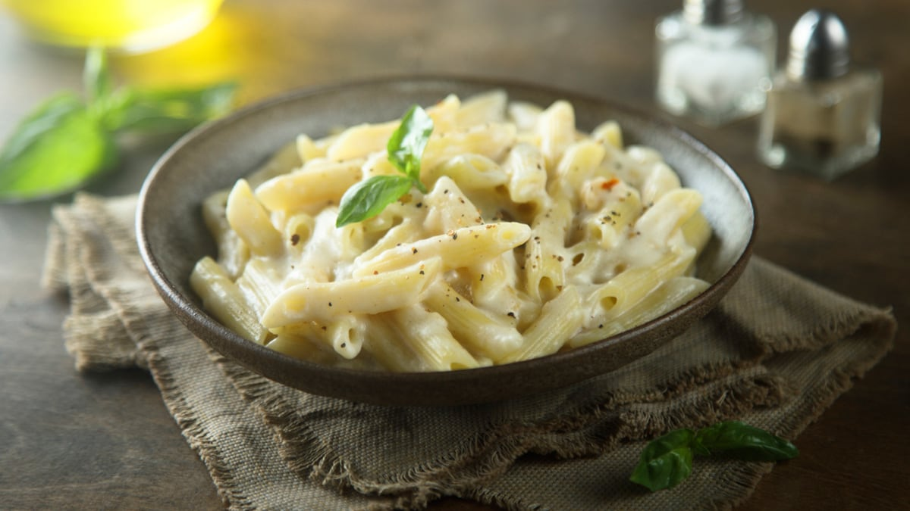

Homemade White Sauce Pasta

Description
Creamy, cheesy, and bursting with flavor — this homemade white sauce pasta is the ultimate comfort food you need in your life! With a silky smooth white sauce, perfectly cooked pasta, and your choice of colorful veggies, this recipe will make you feel like a chef without any fancy ingredients. Perfect for a cozy dinner, date night, or when you just wanna treat yourself to a bowl of warm, gooey goodness 🤤🍝.
Ingredients
- 1 cup pasta (penne, fusilli, or your fave)
- 1 tbsp butter
- 1 tbsp all-purpose flour (maida)
- 1 cup milk
- ½ cup grated cheese (mozzarella or processed)
- Salt and black pepper to taste
- 1 tsp chili flakes (optional)
- 1 tsp oregano or mixed herbs
- 1 cup mixed veggies (capsicum, corn, broccoli, carrot — optional but yum)
Steps
- Boil the Pasta
- Cook pasta in salted boiling water according to package instructions. Drain and set aside.
- Prepare the Veggies (optional)
- Sauté veggies in a bit of butter or oil until tender but still crisp. Set aside.
- Make the White Sauce
- In a pan, melt butter on low heat. Add flour and stir for 1-2 mins until it smells nutty (no raw flour vibes).
- Slowly add milk while whisking to avoid lumps. Keep stirring until sauce thickens.
- Add grated cheese, salt, pepper, chili flakes, and oregano. Mix until cheese melts and sauce is creamy.
- Combine Everything
- Add cooked pasta and veggies to the sauce. Toss well until pasta is fully coated in white sauce.
- Serve and Enjoy
- Plate it up hot, sprinkle extra chili flakes or cheese if you’re feeling fancy, and dig in!
Home Page